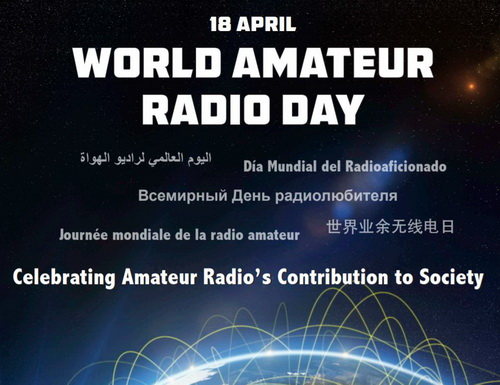

Добро пожаловать на сайт радиолюбителей города Климовичи!
Содержание сайта формируется за счёт
собственных — авторских статей, а
также по реферативному принципу — на основе информации,
собранной в Интернете, тщательно переработанной и систематизированной в
соответствии с той или иной темой.
В случае, если материалы практически не подвергались
переработке, их источники указываются всегда.
Информация для радиолюбителей.
18 апреля - Всемирный день радиолюбителей.
Каждый
год 18 апреля радиолюбители со всего мира выходят в эфир на
праздновании Всемирного дня любительского радио. Именно в этот день в
1925 году в Париже был образован Международный союз радиолюбителей.
Экспериментаторы
радиолюбителей были первыми, кто обнаружил, что спектр коротких волн -
далеко не пустошь - может поддерживать распространение во всем мире. В
стремлении использовать эти более короткие длины волн радиолюбители
«подвергались серьезной опасности быть оттесненными», как
отмечалось в истории IARU . Пионеры любительского радио встретились в
Париже в 1925 году и создали IARU для поддержки любительского радио во
всем мире.
Всего два года спустя, на Международной
радиотелеграфной конференции, любительское радио получило все еще
признанные сегодня - 160, 80, 40, 20 и 10 метров. С момента своего
основания IARU неустанно работает над защитой и расширением
распределения частот для любительского радио. Благодаря поддержке
просвещенных администраций во всех частях земного шара, радиолюбители
теперь могут экспериментировать и общаться в полосах частот,
стратегически расположенных по всему радиочастотному спектру. Из 25
стран, которые сформировали IARU в 1925 году, IARU вырос и включает 160
обществ-членов в трех регионах. IARUРегион 1 включает Европу, Африку,
Ближний Восток и Северную Азию. Регион 2 охватывает Америку, а Регион 3
включает Австралию, Новую Зеландию, островные государства Тихого океана
и большую часть Азии. Международный союз электросвязи ( ITU ) признал
IARU представителем интересов любительского радио.
Сегодня любительское радио популярно, как никогда, с более чем 3 000 000 лицензированных операторов!
Всемирный
день любительского радио - это день, когда общества-члены IARU могут
продемонстрировать свои возможности общественности и поддержать
глобальную дружбу с другими любителями по всему миру.
Объявлена специальная тема Всемирного дня любительского радио 2021 года
IARUАдминистративный
совет выбрал «Любительское радио: дома, но никогда не один»
в качестве темы Всемирного дня любительского радио в воскресенье, 18
апреля 2021 года. Столкнувшись с пандемией, которая вынудила принять
крайнюю физическую изоляцию для сокращения распространения вируса, во
всем мире Сообщество радиолюбителей положительно отреагировало на
преодоление возникшей социальной изоляции. В дни и недели после начала
пандемии радиолюбители спонтанно связывались друг с другом через
радиоволны на местном, национальном и глобальном уровнях. Местные
«оздоровительные сети» обеспечивали дружескими голосами и
регулярными проверками статуса тех, особенно пожилых людей, которые не
выходили из дома. Станции специальных мероприятий «Оставайтесь в
безопасности» в десятках стран напомнили всем нам о важности
ограничения распространения вируса.
Хотя разработка
эффективных вакцин вселяет надежду на возвращение к некоторому подобию
нормальной жизни в конце 2021 года, пандемия все еще будет с нами,
когда мы будем отмечать Всемирный день любительского радио 2021 года.
Эта тема дает возможность нашим членам сообщества сформулировать
содержательные сообщения. широкой публике о ценностях мирового
радиолюбительского сообщества.
Мы предоставили плакат ко
Всемирному дню любительского радио. Любой клуб может загрузить его и
использовать для продвижения WARD в своем регионе. Плакат бывает двух
размеров: 61 x 91 см и маленький флаер ( A4 ).
Группы
должны рекламировать свою деятельность WARD в социальных сетях,
используя хэш-тег #WorldAmateurRadioDay в Twitter и
Facebook. IARU перечислит все мероприятия WARD на этой странице. Чтобы
внести в список свою деятельность WARD , отправьте электронное письмо
секретарю IARU Дэвиду Самнеру, K1ZZ .
Бахрейн: Общество радиолюбителей Бахрейна будет работать с A91WARD с 14 по 18 апреля 2021 года в режимах SSB , FT8 и DMR .
Канада:
Радиолюбители Канады спонсируют специальное мероприятие «Выйти в
эфир во Всемирный день любительского радио». Подробности на
https: // www .rac .ca / w a r d 2 0 21 /
Соединенные Штаты
Америки: ARRL создала веб - страницу в поддержку Всемирного дня
радиолюбитель: HTTP: // WWW .arrl .org / ш о г л г - т о t e u r - r a
d i o - день
В TEN-TEC Наследство Сетки возвращается в 2021
году , чтобы отметить в этом году тему операционную World Amateur Radio
Day через три полосы (80м, 40м, 20м) в 4-часовых группировок 18 апреля
- го . Расписание диапазонов и время работы будут опубликованы за день
до мероприятия здесь: http: // groups .io / g / T E N T E C L E G
A C Y N ETS . Участникам рекомендуется проверять рабочие частоты
на сайте dxwatch.com . Станции Net Control будут использовать Netlogger
.org.для каротажа, чтобы исключить нагромождения и повысить точность.
Netlogger Net Name будет означать «Всемирный день любительского
радио». После входа в систему подтвердите рабочий диапазон /
частоту вверху страницы. Окно чата Netlogger приглашает вас рассказать
историю «Дома, но не в одиночестве», которую можно
прочитать в эфире. Все взносы будут отправлены в IARU / WARD .
Сертификат достижений на специальном мероприятии будет отправлен по
электронной почте каждому участнику, зачисляющему группу (группы),
которые «работали». Проверки, которые работают во всех
диапазонах, получают подтверждение сертификата «Чистой
зачистки». Напишите W4OVT, если ваш адрес электронной почты не
указан в QRZ, чтобы получить бесплатный Сертификат до / до 21 мая.
Плата за использование радиочастотного спектра.
В соответствии с Указом Президента Республики Беларусь от 18 апреля 2006 г. № 240 «О плате за использование радиочастотного спектра» и постановлением Совета Министров Республики Беларусь от 15 июля 2006 г. № 890 «Об установлении порядка определения размера ежегодной, разовой платы и платы за выделение радиочастотного спектра» (далее Постановление) ежегодная плата пользователем радиочастотного спектра вносится с 1 января по 31 января года, в течение которого пользователь имеет право использовать этот спектр.
Плата в республиканский бюджет за выделение и использование радиочастотного спектра, код платежа 04106, оформляется на счета Главного Управления Министерства финансов Республики Беларусь по г.Минску.
Реквизиты для оплаты:
| Получатель (бенефициар) | Главное управление Министерства финансов Республики Беларусь по г. Минску |
| Код платежа | 04106 |
| УНП бенефициара | 100049877 |
| Наименование банка | ОАО "АСБ БЕЛАРУСБАНК", г. МИНСК |
|
BIC банка
действующий
с 01.01.2019
|
AKBBBY2X |
|
Номер счета действующий
с 01.01.2019
|
BY60 AKBB 3602 9810 1000 5000 0000 |
Копия документа, подтверждающего внесения платы, представляется в РУП «БелГИЭ» не позднее 3 рабочих дней со дня её внесения.
Размер ежегодной платы рассчитывается пользователем радиочастотного
спектра самостоятельно, в соответствии с Постановлением, исходя из
базовой ставки в размере 0,14 эквивалентного размера базовой арендной
величины.
Для радиолюбителей расчёт размера ежегодной платы за использование РЧС
РЭС любительской и любительской спутниковой радиослужбы производится по
каждому присвоенному классу радиолюбителя, независимо от количества
используемых РЭС.
Справочно:
сумма ежегодной платы за использование радиочастотного спектра
радиолюбителями составляет:
класс А - 5,73 BYN
класс B - 3,08 BYN
класс C - 1,35 BYN
По вопросам радиолюбительской службы можно обращаться по телефонам:
Могилевская область - +375 (222) 77-59-80
Ждём прохождения на ВЧ диапазонах.
НАСА повідомило про початок нового періоду підвищеної активності
денного світила. Вчені назвали його “Сонячний цикл
25”. Це важливо для
роботи земних електронних технологій і астронавтів на орбіті. Людству
доведеться зіткнутися з технічними проблемами і труднощами, до яких
потрібно підготуватися, пише ВВС.
Періоди спокійного і активного Сонця змінюють один одного приблизно
кожні 11 років. Про це відомо давно, але природа явища досі не
розгадана. Вчені називають це “погодою на Сонці”.
У бурхливі періоди на його поверхні відбувається більше гігантських
вибухів, при яких наша зірка, як сказано в повідомленні НАСА,
“випльовує” в простір додаткову енергію, світло і
речовини сонячної
корони.
Потоки елементарних частинок здатні порушувати радіозв’язок
та
нашкодити астронавтам, які не захищені магнітним полем Землі.
“Не буває поганої погоди, буває погана підготовка до неї,
– заявив
Джейк Блічер, провідний спеціаліст управління НАСА по пілотованих
польотах. – Космічна погода існує і все, а наша справа
– вживати
заходів”.
Мінімум сонячної активності, що зазвичай знаменує собою закінчення
попереднього циклу, припав на грудень 2019 року. Через складність і
непередбачуваність процесів на Сонці вченим знадобилося кілька місяців,
щоб переконатися в цьому остаточно.
“Ми виходимо з мінімальної і вступаємо в період максимальної
сонячної
активності, але важливо пам’ятати, що вона ніколи не
припиняється: вона
лише змінює свої масштаби за принципом маятника”, –
сказала експерт
відділу геліофізики штаб-квартири НАСА Ліка Гухатакурта.
За прогнозами вчених, пік сонячної активності буде в липні 2025 року.
Нинішній період активного Сонця обіцяє бути спокійніше попереднього, що
прийшовся на нульові роки.
“Але це не дає гарантії від екстремальних проявів. Сонце
реально
впливає на наше життя, і цей вплив нікуди не дінеться”,
– говорить Дуг
Бісекер, експерт з фізики Сонця з Центру прогнозування космічної погоди
при Національному управлінні океанічних і атмосферних досліджень США.
До нового періоду активного Сонця в США готуються, як ніколи раніше.
Створено міжвідомчу наукову групу для прогнозування сонячної погоди і
вироблення плану дій.
“Національне метеобюро готує країну до будь-яких змін земної
погоди.
Тепер ми йдемо до того, щоб так само передбачати космічну погоду. У
проекті беруть участь 24 федеральних агентства”, –
заявив директор
офісу по проектам, плануванню та аналізу служби супутникової інформації
управління океанічних і атмосферних досліджень Ельсайед Талаат.
Джерело: ukrrain.com
EU/EW VHF ACTIVITY CONTEST (EWAC)
Положение открытых соревнований активности Белорусских станций на УКВ
EU/EW VHF ACTIVITY CONTEST (EWAC)
Дата:
144 MHz — 1-ый вторник каждого месяца.
432 MHz — 2-ый вторник каждого месяца.
1,3 GHz — 3-ий вторник каждого месяца.
2,4 GHz и выше — 4-ый вторник каждого месяца.
Время:
18:00 - 21:59 UTC с Ноябрь до Март,
17:00 - 20:59 UTC с Апрель до Октябрь
Связи:
Работа в эфире в соответствии с полосой частот 1-го региона IARU. За
все QSO насчитываются очки, но для зачёта необходима как минимум одна
связь с белорусской станцией. Связи через активные ретрансляторы и EME
(земля-луна-земля) не засчитываются.
Виды излучения:
CW, SSB, FM
Категории:
Каждый диапазон считается отдельным туром. Все участники соревнуются в
одной категории, независимо от количества операторов.
Передаваемая информация:
RS(T) и WW локатор, например 599 KO33RR.
Очки::
144 MHz, 432 MHz и 1,3 GHz: 1 км = 1 очко + 500 призовых очков за
каждый новый WW локатор (KO33, KO14, KO25, ...)
2,4 GHz и выше:
1 км = 1 очко * коэффициент диапазона + 500 призовых очков за каждый
новый WW локатор.
Коэффициент диапазона:
2,4 GHz * 2
5,7 GHz * 4
10 GHz * 5
24 GHz * 6
Связь со своим WW LOC локатором (например KO33RR>KO33RR) даёт 1
очко.
Отчеты, в формате EDI, за EWAC необходимо загружать на сайт по адресу http://qso.by в разделе EWAC.
Отчеты за дни активности других стран, необходимо отсылать по адресам,
указанным в положении соответствующего дня активности. Необходимо
помнить, что иностранный участник, чтобы попасть в зачет, должен
провести хотя бы одно QSO с радиолюбителем страны организатора.
Отчёт должен содержать дату, врeмя UTC, позывной, переданный рапорт
RS(T), принятый рапорт RS(T) и WW LOC.
Титульный лист должен содержать:
позывной, имя, адрес эл.почты, собственный WW LOC. Рекомендуемое
название файла отчета: “позывной тире диапазон тире месяц
точка edi”, например. EW1…-144-02.edi.
73!
Сергей
EW1AA
_________________
ex RC2AA, UC2ABT
CEPT
После 8 лет переписки с госорганами Республики Беларусь
внесены изменения
в Рекомендацию СЕРТ T/R 61-01. (см.
приложенный
оригинал на английском яз. на сайте БФРР или http://www.erodocdb.dk)
Таким образом, разрешение (Лицензия) радиолюбителя РБ (Radio Amateur
Licence), официально признается в странах членах СЕРТ перечисленных в
ANNEX 2 Table 1, а также в странах не членах СЕРТ присоединившихся к
Рекомендацию СЕРТ T/R 61-01 перечисленных в ANNEX 4 Table 2.
Примечания:
1. Радиолюбитель РБ при наличии Radio Amateur Licence всех классов (А,
В и С) в течении 90 дней может работать в эфире в стране пребывания без
получения индивидуальной временной лицензии от посещаемой страны при
соблюдении данной Рекомендации и действующих правил страны пребывания.
2. Особое внимание следует обращать на различия в частотных
распределениях любительским службам в трех Районах МСЭ.
3. При ведении передач в стране пребывания владелец лицензии должен
использовать свой национальный позывной сигнал, перед которым должен
стоять код позывного CEPT, указанный в графе 2 Приложений II и IV. Код
позывного СЕРТ и национальный позывной должны быть отделены знаком
“/”.
4. Рекомендация не имеет отношения к импорту и экспорту любительского
оборудования, которые подчиняются только соответствующим таможенным
правилам.
EW1KA
ПРОГНОЗ ПРОХОЖДЕНИЯ НА ЛЮБИТЕЛЬСКИХ ДИАПАЗОНАХ.
Главная | О своём городе | Антенны | Радиосвязь на КВ | Радиосвязь на УКВ | Форум
Copyright © 2021 Сайт радиолюбителей г. Климовичи | Design studio «Zurbagan»